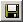

VS6 II help
VS6 II help
VS6 Main Window
Short Cuts
[F1] [F2] [F3] [F4]
[F5] [F6] [F7] [F8]
[F9] [F10] [F11] [F12]
F1 - Open this help
F3 - Start CAN
F4 - Stop CAN
F5 - Fit Windows
F9 - Toggle Record
F10 - Clear
F11 - Load CAN trace
Main Menu
file - load vehicle... Load a vehicle .ini file.
How to configure a vehicle configuration file
file - load CAN config... Load a CAN configuration .ini file.
How to configure a CAN configuration file
CAN/CANalyzer Toolbar
Start and stop CAN. Control CANalyzer.
Recorder
Records CAN data from CAN bus or .asc-trace.
- Move scroll bar to move through the recorded data.
Bottom Toolbar

- Click to load a CAN trace (.asc)
- Click "findBreak" to fit odometry movement together. VS6 II finds the break automatically.
type 0 into left text field to fit at the actual vehicle position.
- move mouse over to open the info memo to get informations about last loaded files.
Double click into memo to clear informations.
VS6 Windows
Data Window
- Double click into the data window to switch between left and right data.
xy Image Window
- Left click with mouse into image and move to move the xy image.
- Right click with mouse into image and move to zoom the image. Move up to zoom in, move down to zoom out.
- Hold [Shift] or [Strg] and move mouse to measure in graphic. [Shift] start
mouse measurement, [Strg] end mouse measurement.
- Double click into image to clear mouse measurements and not actual parking slot.
- Check left side to display left odometry and left parking slot.
- Click to save image.
The image will be saved as *.bmp. The name of the bitmap will be the name of the last opened CAN trace. VS6 II will save the bitmap into the folder of the last opened CAN trace.
- move mouse over to open the image menu.
In the image menu you can setup your display:
- Switch on/off the data you want to display.
- Move scroll bar to change the sensors opening angle.
- Move double scroll bar to hide the start or end of the record.
S6 Window
Use S6 Window do measure a coordinate system for Tachymeter measurements.
All measurement points of the Tachymeter will be converted into that coordinate system.
- Click A, B or C to set the measurement points for coordinate system. The curren Tachymeter measuremnt will be used.
- Click  to save these three points to an *.ab0 file (text file like an .ini file).
- Click to load these three points from a *.ab0 file with.
With A and B the direction of the x axis will be set.
With 0 the origin will be set.
Example for a parking slot:

Example for rear axis middle of a test vehicle:
.